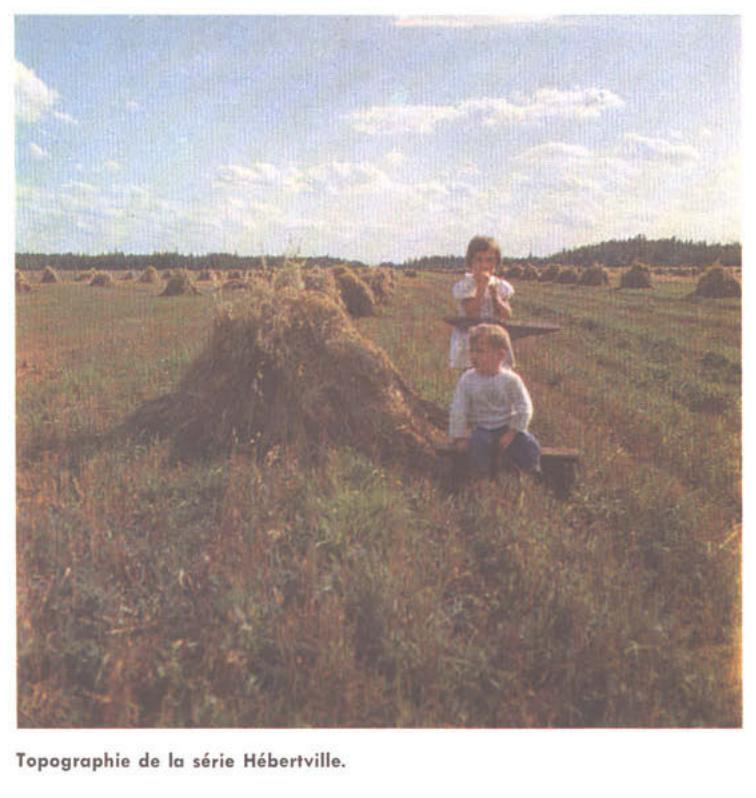
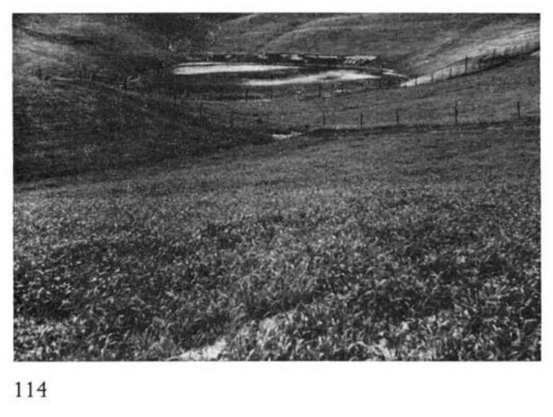

Identification & Caractéristiques Générales
La série Hébertville se développe sur des dépôts de sédiments argileux lacustres et marins d'origine quaternaire, souvent associés à la périphérie des bassins de sédimentation calcaire des régions du Saguenay–Lac-Saint-Jean et de Chicoutimi. Elle occupe généralement des positions topographiques de plaines faiblement déprimées ou des zones de transition sise entre les argiles mieux drainées de la catena Larouche-Chicoutimi et les dépôts organiques minces sus-jacents. La microtopographie est plane à légèrement concave, ce qui restreint l'écoulement latéral des eaux de surface et influence directement la dynamique hydrique du profil.
Morphologiquement, le profil se caractérise par une texture argileuse lourde à limono-argileuse en surface et en profondeur, présentant une compacité modérée à élevée et une structure polyédrique à prismatique sujette à la fente en période sèche. En conditions naturelles, le drainage est jugé mauvais à très mauvais, constituant le membre le plus hydromorphe de sa catena. La perméabilité est lente et une nappe phréatique perchée temporaire persiste fréquemment au printemps ou lors des épisodes pluvieux intenses. Le sol montre une teneur en matière organique supérieure à la moyenne des argiles régionales dans l'horizon supérieur, conférant une coloration foncée au solum, tandis que la réaction est généralement neutre à légèrement acide, avec la présence occasionnelle de cailloux ou de blocs épars en surface selon les phases cartographiques.
Sur le plan agronomique, l'argile Hébertville est reconnue comme un sol de grande valeur intrinsèque pour la production agricole, principalement orientée vers les grandes cultures et l'industrie laitière. Ses limitations majeures résident dans l'excès d'eau printanier et la lenteur du ressuyage, requérant l'installation systématique d'un réseau de drainage souterrain (tuyauterie) pour exprimer son plein potentiel. La gestion de la fertilité exige le maintien du taux de matière organique et la prévention de la dégradation structurale par un travail du sol adéquat. En régie de fertilisation, l'application d'azote et de fumier doit être minutieusement gérée, particulièrement pour les céréales, afin de limiter les risques de verse des cultures. La configuration plane du terrain facilite par ailleurs l'utilisation de la machinerie agricole lourde et moderne.
Caractères Distinctifs & Morphologie Génétique (Comté de Chicoutimi — Page 39)
- Topographie : faiblement déprimée
- Drainage : mauvais à très mauvais
- Grand-groupe génétique : gleysol
- Degré d'érosion : nul
- Classe d'utilisation : 1
- Association géographique : terres noires peu profondes sur argiles; séries Chicoutimi, Alma, Taché.
- Végétation naturelle : bouleaux, épinettes, mélèzes; épilobes, etc.
Classification Taxonomique & Environnement Pédologique
| Ordre Pédologique | Gleysolique |
|---|---|
| Grand Groupe (SCSS) | Gleysol humique |
| Sous-Groupe Taxonomique | Gleysol humique orthique |
| Famille Pédologique | Argileuse-fine, mixte argileux, alcalin (calcaire) |
| Mode de Dépôt Parental | Marin |
| Classe de Drainage Naturel | Mal drainé |
| Régime Thermique & Humidité | Frais / Subaquique |
Description Morphologique du Profil Type
Séquences génétiques des horizons pédologiques caractérisant le profil type représentatif de la série Hébertville :
Profil représentatif — Comté de Chicoutimi — Phase est indiquée
✓ Source : Comté de Chicoutimi — Page 39Couleur Munsell : 10YR 3/2
Structure & Consistance : Polyédrique à granulaire
Description morphologique : Argile limoneuse gris brun très foncé (10YR 3/2), avec traînées de matières humiques plus noires; pH : 6.3.
Couleur Munsell : 5Y 5/2
Structure & Consistance : Polyédrique à granulaire
Description morphologique : Argile limoneuse à loam argileux gris olive à olive (5Y 5/2-5/3); dense; ferme; pH : 6.8.
Couleur Munsell : 5Y 5/15
Structure & Consistance : Polyédrique
Description morphologique : Argile gris à gris olive (5Y 5/15/2); concrétions rouilleuses; friable; structure polyédrique; pH : 7.1.
Couleur Munsell : 5Y 5/1
Structure & Consistance : À tendance cubique plus développée que btjg
Description morphologique : Argile très friable, gris à gris foncé (5Y 5/1-4/1); plus argileux que Aejg; structure à tendance cubique plus développée que Btjg; effervescence; nappe phréatique; pH: 6.8.
Profil représentatif — Pédologie de la région du Lac-Sa
✓ Source : Pédologie de la région du Lac-Sa — Page 52Couleur Munsell : Non précisée
Structure & Consistance : Polyédrique à granulaire
Description morphologique : Matière organique (carex, joncs); pH: 6.3.
Couleur Munsell : 5Y 7/2
Structure & Consistance : Polyédrique à granulaire
Description morphologique : Argile limoneuse gris clair (5Y 7/2) à l'état sec; compacte, dense, massive, rouillée autour des canaux des racines et des radicelles; taches jaunâtres-brunâtres peu abondantes; pH: 6.5.
Couleur Munsell : 5Y 7/1
Structure & Consistance : Polyédrique à granulaire
Description morphologique : Argile limoneuse gris clair (5Y 7/1) à l'état sec; assez friable mais se durcit en séchant; pH: 7.4.
Couleur Munsell : 5Y 7/1
Structure & Consistance : Cubique
Description morphologique : Argile limoneuse gris clair (5Y 7/1) à l'état sec; structure cubique; brisure polyédrique; effervescence; pH: 8.1.
Profil représentatif — Pédologie de la région du Lac-Sa
✓ Source : Pédologie de la région du Lac-Sa — Page 139Couleur Munsell : 5YR 2/2
Structure & Consistance : Polyédrique à granulaire
Description morphologique : Matière organique brun-rouge foncé (5YR 2/2) plus ou moins décomposée; pH: 4.2.
Couleur Munsell : 10YR 4/2, 2.5Y 5/2
Structure & Consistance : Polyédrique à granulaire
Description morphologique : Loam limono-argileux brun-gris foncé (10YR 4/2) à brun-gris (2.5Y 5/2); plus massif et plus sec que l'horizon d'en dessous; infiltration d'acide humique; pH: 5.1.
Couleur Munsell : 2.5Y 5/2, 7.5YR 5/6
Structure & Consistance : Polyédrique à granulaire
Description morphologique : (Y compris G 1 ) Argile limoneuse brun-gris (2.5Y 5/2) avec taches rouillées brun vif (7.5YR 5/6); pH: 5.7.
Couleur Munsell : 2.5Y 6/2
Structure & Consistance : Polyédrique plus friable que g
Description morphologique : Argile limoneuse gris-brun clair (2.5Y 6/2); structure polyédrique plus friable que G; effervescence; pH: 7.7.
Profils Photographiques & Planches de Terrain
Documents iconographiques, figures pédologiques et coupes de terrain documentées dans les mémoires d'inventaire pour de la série Hébertville :


Propriétés Physico-Chimiques & Analyses de Laboratoire
| Horizon | Prof. limite | pH (H₂O) | M.O. % | C tot. % | N tot. % | C.E.C. (cmol/kg) | Sable % | Limon % | Argile % | P Meh3 (mg/kg) | K (cmol/kg) | Ca (cmol/kg) | MVA (g/cm³) |
|---|---|---|---|---|---|---|---|---|---|---|---|---|---|
| Ap1 | — | 6.16 | 6.54 | 3.79 | 0.23 | 26.2 | 1.6 | 46.2 | 52.2 | 25.0 | 0.56 | 13.99 | 1.1 |
| Ap2 | — | 6.25 | 5.49 | 3.18 | 0.2 | 25.5 | 1.6 | 47.2 | 51.2 | 19.7 | 0.5 | 13.98 | 1.21 |
| B | — | 6.74 | 2.29 | 1.33 | 0.08 | 24.2 | 1.2 | 45.3 | 53.5 | 9.9 | 0.41 | 14.75 | 1.48 |
Particularités Régionales, Phases & Variantes Pédologiques
Déclinaisons régionales, faciès texturaux, phases d'érosion ou de pierrosité et variantes cartographiées par étude pour de la série Hébertville :
| Étude Régionale | Symbole | Appellation / Phase / Variante | Différenciation avec la série type (Analyse pédologique) |
|---|---|---|---|
| Comté de Chicoutimi | He |
Hébertville argile | Modalité modale de référence (type de base de la série). |
| Pédologie de la région du Lac-Saint-Jean | He |
Hébertville argile | Conforme à la série type de référence (caractéristiques texturales et drainage identiques). |
Distribution Pédo-Paysagère & Représentativité Cartographique (Couverture PPS 2026)
- Accumulations organiques (TNH) — co-occurrente dans 46 polygone(s)
- Chicoutimi loam argileux (CCU) — co-occurrente dans 31 polygone(s)
- Taillon loam (TLL) — co-occurrente dans 24 polygone(s)
Aptitudes Agronomiques, Hydropédologie & Conservation des Sols
Indicateurs Hydropédologiques & Vulnérabilité à l'Érosion (BDHP 2026)
Interprétation BDHP : Potentiel de ruissellement modérément faible. Infiltration modérée avec textures moyennes à modérément grossières.
Classement selon l'Inventaire des Terres du Canada (ITC / CLI) : Classe 2w.
- Potentiel agricole : Terroir adapté aux cultures régionales selon la texture dominante et la régie de drainage.
- Contraintes majeures : Mal drainé. Risque d'engorgement temporaire ou d'excès d'eau printanier.
- Gestion & Aménagement : Drainage souterrain ou superficiel préconisé sur les terres planes. Chaulage et apport organique régulier selon les bilans agronomiques.
- Cultures adaptées : Grandes cultures (maïs, soya, céréales), prairies fourragères et cultures maraîchères selon le contexte géomorphologique.